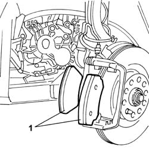
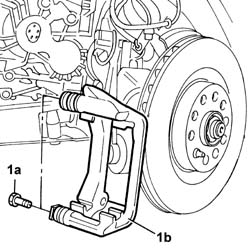
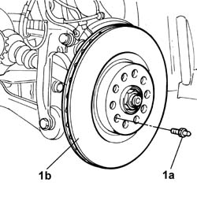

3310A52 FRONT BRAKE DISCS - R.R. with brake calipers removed
- Path
- Procedures > 33 BRAKES > 3310 DISC BRAKES > 3310A FRONT DISC BRAKES > 3310A52 FRONT BRAKE DISCS - R.R. with brake calipers removed
- Kind
- repair procedure (removal / refitting; the operation number is the code)
- Applies to
- all engines; all production periods
- Interactive page
- https://sloeber94.github.io/elrnDB-lThss/en/#/78508
Applies to: all engines; all production periods
 Removing
Removing
 Refitting
Refitting- Disconnect the electrical connection for the brake pad wear sensor.
 | Description | Connector |
|---|---|---|
. | Right brake pad wear sensor (switch) | K021 |
1. Remove the front brake pads from the bracket.

Applies to: all engines; all production periods
1. Undo the bolts (1a) and remove the front disc brake caliper brackets (1b).

Applies to: all engines; all production periods
1. Undo the fixing pin (1a) and remove the brake disc (1b) from the housing in the wheel hub.

Applies to: all engines; all production periods
Refitting
Removing- Fit the front brake disc complete with bracket.
- Torque tighten the brake disc to the wheel hub.
 | Value - daNm | Fastening | Component | Ø |
|---|---|---|---|---|
. | 2 | Pin | FRONT BRAKE DISCS | M10 |
- Fit the brake caliper bracket and tighten the fixing bolts.
- Fit the front brake pads on the brake caliper bracket.
- Connect the electrical connection for the brake pad wear sensor.
| Description | Connector |
|---|---|---|
. | Right brake pad wear sensor (switch) | K021 |
Topics that link to this page (4)
- 3310A59 Front brake DISC GUARD (one), left or right - R.R.
- 4450C10 front pillar (one), l/h or r/h complete with wheel hub - r+r with wheel removed - check wheel geometry separately
- 4450C28 Front wheel HUB - R.R. with wheel removed - check wheel geometry separately.
- 4450C32 BEARING for one front wheel hub, l/h or r/h - Replace